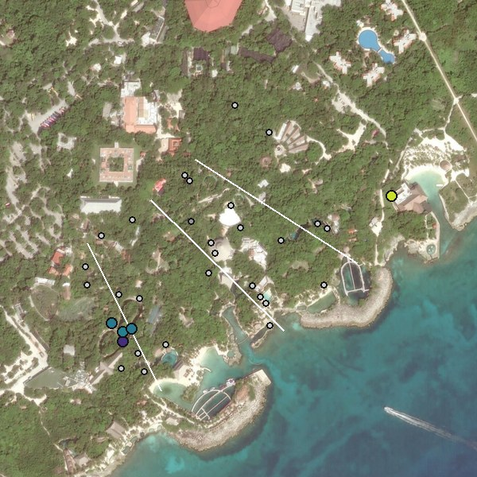

Punta Maroma publicadopublished
91 edades U-Th (Medina-Valmaseda et al. 2025; Blanchon et al. 2017) · 12 logs de perforación
91 U-Th ages (Medina-Valmaseda et al. 2025; Blanchon et al. 2017) · 12 core logs

Mahahual en cursoongoing
13 núcleos (2021–2022) y 12 muestras superficiales (2025–2026) · fechamiento pendiente
13 cores (2021–2022) and 12 surface samples (2025–2026) · dating pending

Xcaret publicadopublished
33 secciones verticales del arrecife MIS 5e · 33 edades U-Th (Blanchon et al. 2009; Blanchon 2010) · posiciones reconstruidas
33 vertical sections of the MIS 5e reef · 33 U-Th ages (Blanchon et al. 2009; Blanchon 2010) · reconstructed positions